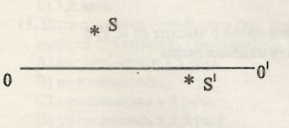

25. На рисунке дана светящаяся точка S и ее изображение относительно главной оптической оси
стеклянной линзы $(n_л>n_{ср})$. Это линза - ..., изображение - ...

A) собирающая, в бесконечности
B) собирающая, мнимое
C) рассеивающая, мнимое
D) рассеивающая, действительное
E) собирающая, действительное.